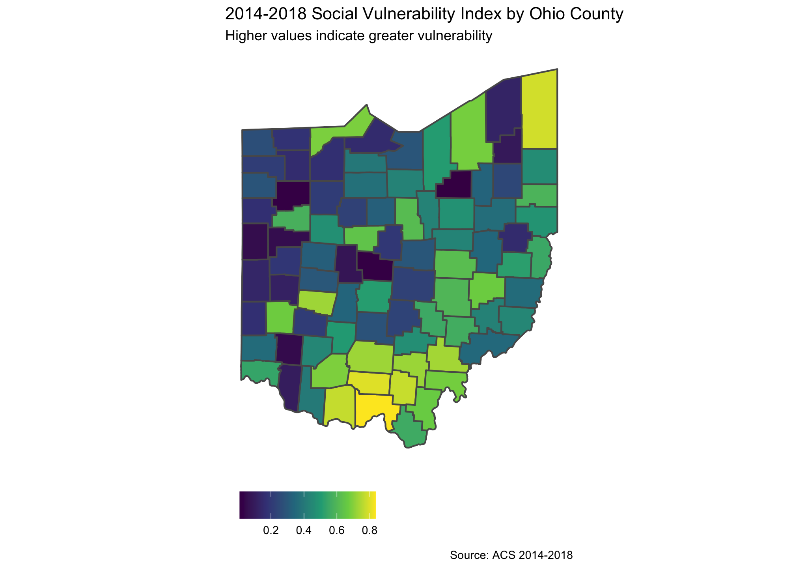

Social Vulnerability Index vs the Area Deprivation Index
The Social Vulnerability Index
Latest data are for available for 2018 but are really American Community Survey (ACS) 2014-2018 data. The most recent ACS data are for 2016-2020.

Here is a county-level map.
The Area Deprivation Index
The Area Deprivation Index (ADI) is based on a measure created by the Health Resources & Services Administration (HRSA) over three decades ago, and has since been refined, adapted, and validated to the Census Block Group neighborhood level by Amy Kind, MD, PhD and her research team at the University of Wisconsin-Madison. It allows for rankings of neighborhoods by socioeconomic disadvantage in a region of interest (e.g. at the state or national level). It includes factors for the theoretical domains of income, education, employment, and housing quality. It can be used to inform health delivery and policy, especially for the most disadvantaged neighborhood groups. “Neighborhood” is defined as a Census Block Group.
How well do the two indices correlate?
Another way to look at it would be in terms of county rankings on each index.

We might as well look at the county ranks in detail; the table below reflects how a county stacks up on SVI versus ADI ranks.
Evidence-Based Perspectives
When it comes to assessing COVID-19’s impact on a specific geographic location, and using that information to prioritize resources such as vaccine and coronavirus testing, two different systems of measuring social disadvantage have been used. One, the Social Vulnerability Index, has already been used in Michigan to prioritize vaccination, while the other, called the Area Deprivation Index, had not.
Analysis by IHPI members Renuka Tipirneni, M.D., M.S., and Paula Lantz, Ph.D., M.S., together with Monita Karmakar, Ph.D., M.S. showed that
both ADI and SVI had similar associations with COVID-19 incidence and mortality overall, though ADI had stronger associations with mortality.
The SVI includes four sub-indices, and the analysis shows that two of them were associated with COVID-19 incidence, while the other two were associated with mortality.
The authors conclude that this shows that ADI can be used as an alternative to SVI, but with the caveat that SVI is more useful for larger geographic areas because it focuses on the county level, while ADI is better for targeting smaller areas because it includes data at the level of neighborhoods, but lacks data on race/ethnicity.
Another study compared four indices, including the ADI and SVI, in the context of COVID-19 vaccine allocations (see here). The main takeaway there was:
The ADI reports the most granular geographic units (block groups), compared with the CCVI and SVI (census tracts). Larger geographic units may mask heterogeneities in “disadvantage” in population-dense settings, such as larger cities, and may lead to underestimation of disadvantage. However, because most data are available at the census tract, one can favor pragmatically trading off accuracy for comprehensiveness of data. Additional variation is found in indices’ variable weighting, for which some indices rely on factor score coefficients (ADI) while others have fixed weights for each domain, resulting in differences even among indices with similar variables, affecting the broader concept of “disadvantage” that is captured.
See also here for indices and elective surgeries.